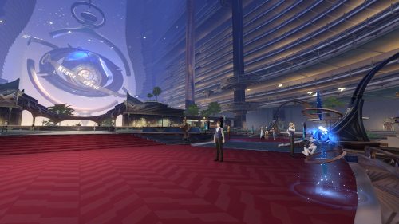
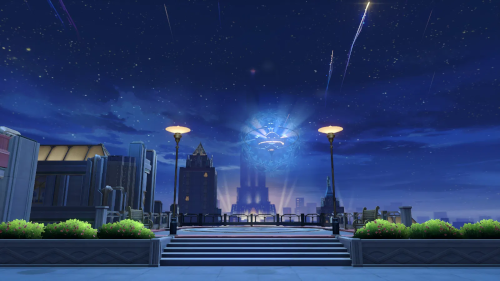
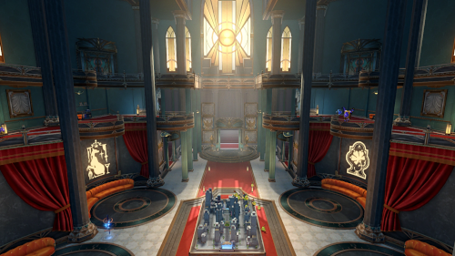
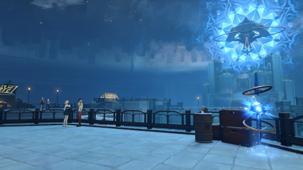
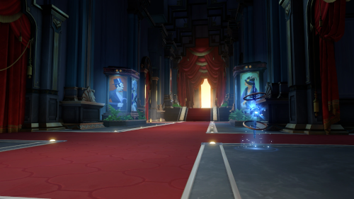
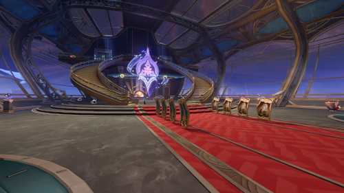
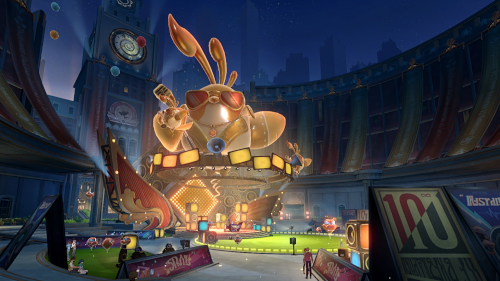
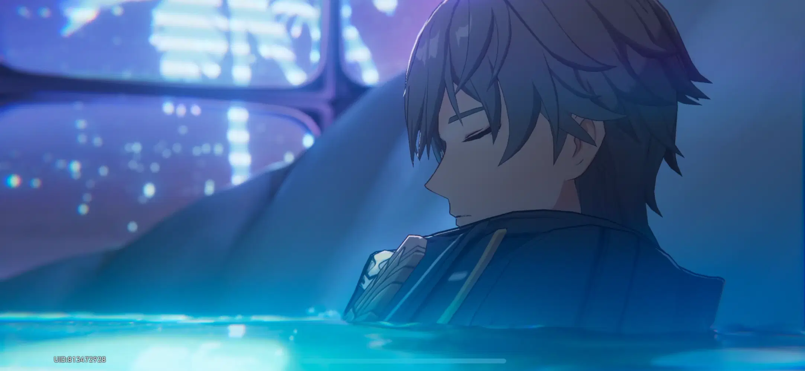
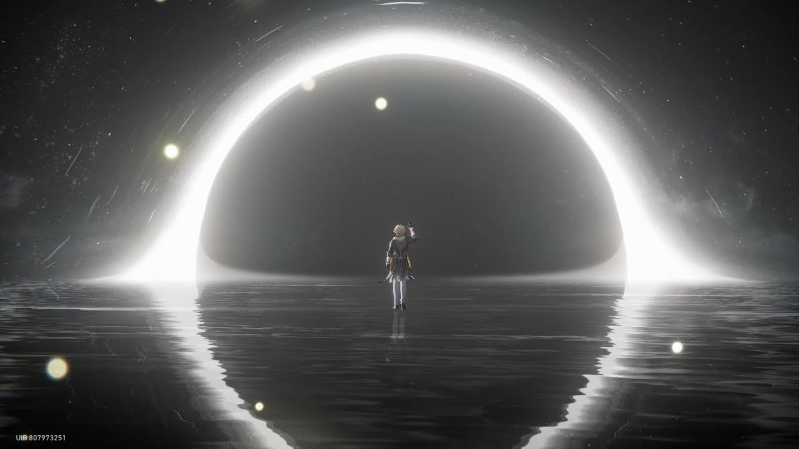
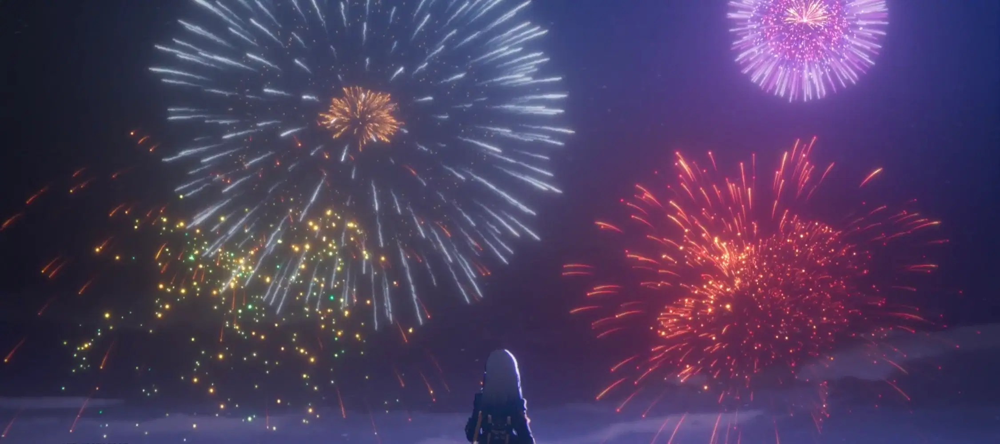

The Astral Express crew arrives on Penacony, a planet transformed from a former prison into a luxurious dream resort by The Family, under the influence of the Aeon of Harmony, Xipe. Invited to the Charmony Festival, they meet key figures like Sunday and his sister Robin. As they explore, the crew discovers that Penacony's Dreamscape, a collective dream system, harbors hidden dangers and that not all is as harmonious as it seems. The disappearance of Robin and the emergence of anomalies hint at deeper conspiracies. The Trailblazers begin to question the true nature of the Dreamscape and The Family's intentions.

Delving deeper, the Trailblazers uncover that the Dreamscape is manipulated by The Family to control and trap consciousness. Encounters with entities like "Death" and revelations about characters such as Firefly and Acheron expose the Dreamscape's darker facets. The crew learns about the existence of Dreamflux Reef, a realm where those "killed" in the dream are sent, challenging their understanding of life and death within this system. Aventurine's investigations further reveal The Family's exploitation of the Dreamscape for their own ends. The boundaries between dream and reality blur, leading to increased tension and urgency.

The Trailblazers confront Sunday at the Penacony Grand Theater, uncovering his alliance with the Dreammaster and their plan to use the Stellaron's power to impose Order's will upon Penacony. With assistance from allies like Acheron, Black Swan, and Boothill, they navigate illusions and face formidable challenges. The final battle sees the crew overcoming Sunday's machinations, restoring balance to the Dreamscape. The victory signifies the reclamation of Penacony's autonomy and the thwarting of Order's influence.
In the wake of the conflict, the Charmony Festival is rebranded and held aboard the Radiant Feldspar, now gifted to the Trailblazers as the Trailblaze's Stern. The Interastral Peace Corporation (IPC) becomes a significant stakeholder in Penacony, aiming to stabilize and oversee its future. Sunday, seeking redemption, departs with the Astral Express crew to find a true paradise. As the crew prepares for their next journey, they set their sights on Amphoreus, the Eternal Land, to replenish their resources and continue their cosmic adventure.

Robin is a celebrated pop star from Penacony, beloved for her ethereal voice and gentle demeanor. Though she presents a composed and graceful image, she carries a deep sense of duty beneath her stardom. As a key Dreamscape authority, she becomes involved in the Penacony crisis, using both her influence and insight to aid the Trailblazers. Her calm presence often contrasts with the chaos unfolding around her, making her a stabilizing figure in uncertain times.
Sunday is a prominent figure in Penacony, serving as a representative of The Family and acting as the charismatic manager of The Reverie Hotel. With a charming, diplomatic demeanor, he acts as a liaison between guests and the ruling powers behind the scenes. Despite his refined appearance, Sunday is a deeply conflicted character caught between loyalty to his ideals and the harsh truths of Penacony's operations. His actions and decisions carry significant weight in the unfolding events of the Penacony crisis.
Misha is a bellboy at The Reverie Hotel in Penacony, known for his upbeat attitude and dedication to his work. Enthusiastic and eager to help, he strives to make a good impression on guests despite his inexperience. Beneath his cheerful exterior, Misha harbors a mysterious past and hidden potential that slowly comes to light as the story progresses. His interactions with the Trailblazer hint at a deeper connection to the strange events unfolding in the dream world.
Gallagher is a laid-back yet dependable security officer in Penacony, often seen patrolling the areas around The Reverie Hotel. Despite his casual demeanor and love for a good drink, he is deeply committed to keeping the peace and protecting others. He offers assistance to the Trailblazers during their investigation into Penacony’s secrets, proving himself to be more capable than he first appears. Gallagher’s grounded nature and surprising insight make him a reliable ally amid the chaos of the dreamscape.
Aventurine is a senior manager of the IPC Strategic Investment Department and a calculating member of the Ten Stonehearts. With a charming yet cunning personality, he blends charisma with ruthlessness, always weighing risks and rewards. During the events of Penacony, he plays a major role in the unfolding conflict, manipulating outcomes behind the scenes while evaluating the Trailblazers as potential assets. Though his true intentions remain veiled, his influence is undeniable, making him a formidable figure in the world of finance and beyond.
Dr. Ratio is a reserved and intelligent member of the Intelligentsia Guild who upholds logic, reason, and critical thinking above all else. With a skeptical attitude and a sharp tongue, he frequently questions superstition and challenges others’ beliefs, often coming off as blunt or aloof. Despite his solitary nature, he occasionally allies with the Trailblazers during significant events, lending his vast knowledge when logic demands action. His dedication to pure rationality makes him a unique and thought-provoking presence in any conflict.
Sparkle is a mysterious and charismatic member of the Masked Fools, known for her flair for theatrics and mastery of deception. She plays a key role in the events of Penacony, manipulating narratives and illusions behind the scenes with uncanny precision. Despite her whimsical persona, Sparkle is highly intelligent and cunning, often blurring the lines between performance and reality. Her involvement leaves a lasting impact on both allies and enemies alike, making her one of the most enigmatic figures encountered by the Trailblazers.
Acheron is a solitary and enigmatic swordswoman who follows the Path of Nihility, wielding her blade with silent resolve. Often referred to as the "Galaxy Ranger," she traverses the cosmos to fulfill a mysterious, self-imposed mission related to the Aeons. She becomes involved in the Penacony incident, crossing paths with the Trailblazers as their goals briefly align. Acheron rarely reveals her thoughts, but her actions speak volumes—marked by a quiet sense of duty and deep scars from an unrevealed past. Her presence is striking, her power undeniable, and her true purpose remains shrouded in cosmic mystery.
Black Swan is a mysterious Memokeeper who safeguards memories and secrets within Penacony. She operates with calm precision, guiding and influencing events from behind the scenes while preserving vital knowledge. Though her true intentions often remain hidden, her role as a guardian of memories makes her a crucial figure in the unfolding conflict. Black Swan’s calm demeanor and deep insight add a layer of intrigue and wisdom to the Trailblazers’ journey.
Firefly, also known as SAM, is a young girl clad in a mechanical armor known as "SAM." She is a member of the Stellaron Hunters, a faction that collects Stellarons for their own purposes. Originally from the now-fallen Republic of Glamoth, Firefly was engineered as a weapon against the Swarm, resulting in accelerated growth and a tragically shortened lifespan. Afflicted with Entropy Loss Syndrome, a condition caused by genetic modification, she joined the Stellaron Hunters in search of the meaning of life and a way to defy her fated demise.